基础物品
武器

压缩石剑（锋利II 击退I）
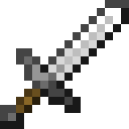
铁剑（耐久III）
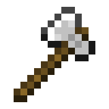
枯骨斧（锋利II 耐久III 经验修补I）
材料

铁块
食物/消耗品

金苹果
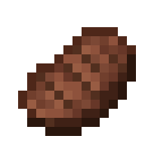
上等牛排
一般物品
武器

钻石轻剑（耐久I）
钻石轻剑（耐久III）
材料
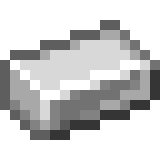
铁锭

金锭
食物/消耗品
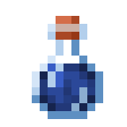
速度I药水（180秒）
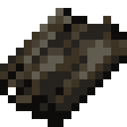
速食干粮*16
特殊物品
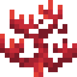
初级生命之晶（命数上限+1）
饰品
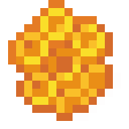
黄金头骨（保护类饰品）
至蓝水晶（攻击类饰品）
进阶物品
武器
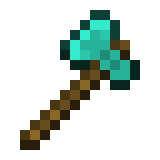
粒子晶斧（经验修补I）
材料
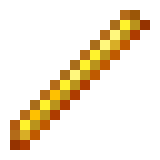
烈焰棒
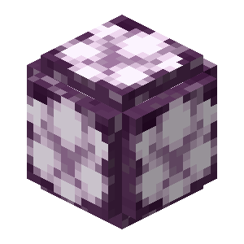
末影结晶
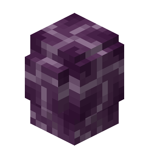
末影结晶碎片*9
食物/消耗品
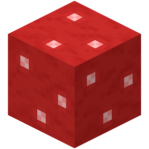
孢子球*4
饰品
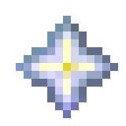
神圣冰脉（特殊类传说饰品）
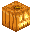
根源仿制核心（特殊类饰品）
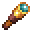
轻灵之眼（特殊类饰品）
高级物品
材料
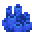
潮汐精华
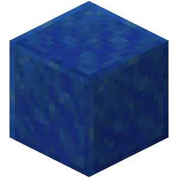
青金石块
特殊物品

虚界节点指针
异常雷暴定位指针
饰品
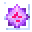
末影储能晶体（特殊类饰品）
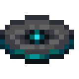
喀俄涅奏鸣曲（防御类饰品）
技能符石
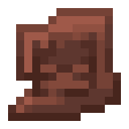
技能符石-末影爆发
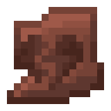
技能符石-粒子冲击
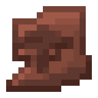
技能符石-粒子缓冲
地狱进阶物品
武器

金质猪灵法杖（耐久III）
食物/消耗品

流金萝卜
地狱高级物品
材料
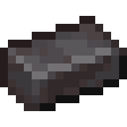
下界合金锭
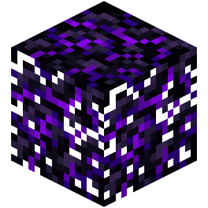
哭泣的黑曜石
饰品

岩火项链（保护类饰品）
武器配件
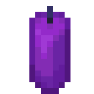
猪灵法杖-充能之石
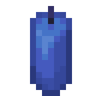
猪灵法杖-轻捷之石
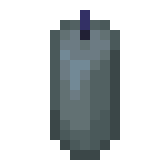
猪灵法杖-庇护之石
四阶锻造
饰品
幻尘•虚界回响（攻击类传说饰品）

虚影残片（饰品主动技能触发物）
晶海锻造
武器
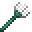
三叉戟（激流I 穿刺I 经验修补 耐久III）
饰品

远古潮汐本源（保护类传说饰品）
武器配件
三叉戟-战斗符文
五阶锻造
材料

末影之眼*60
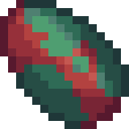
高阶保护石*2
特殊物品

冰层引导指针
饰品
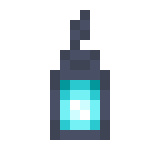
凛冬噬渊之巢（攻击类传说饰品）
特殊锻造
材料
神秘邀请函